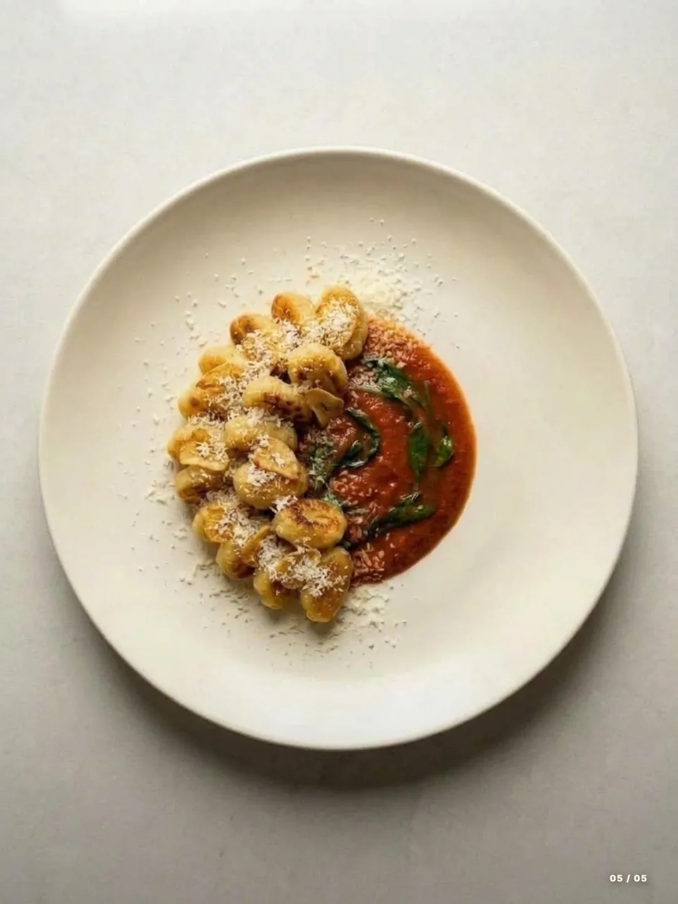
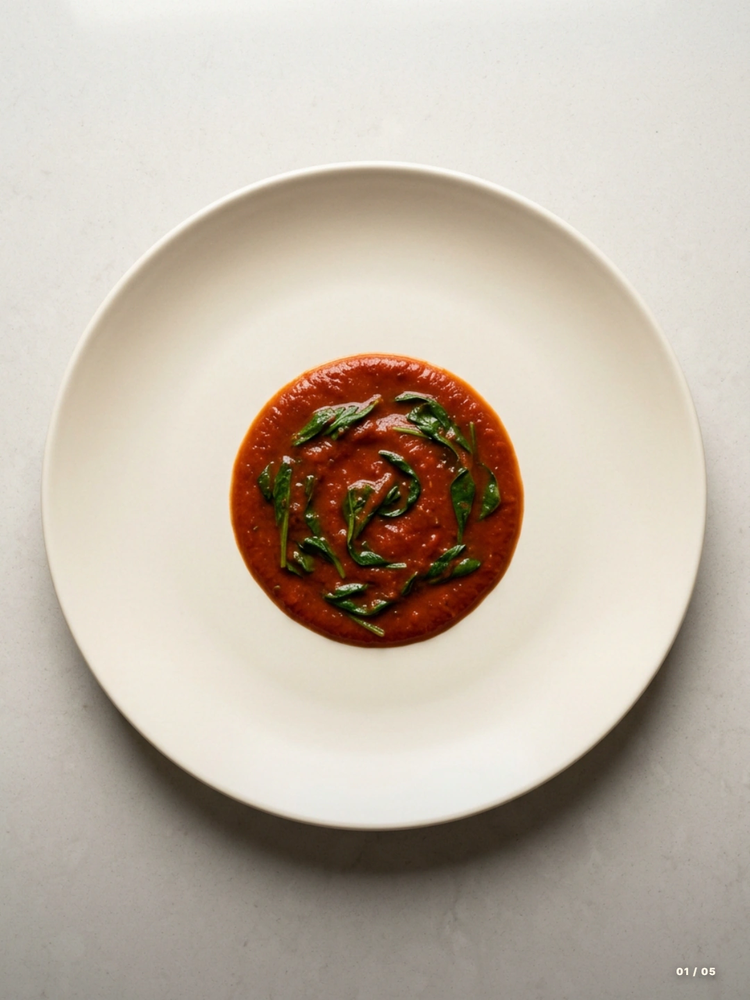
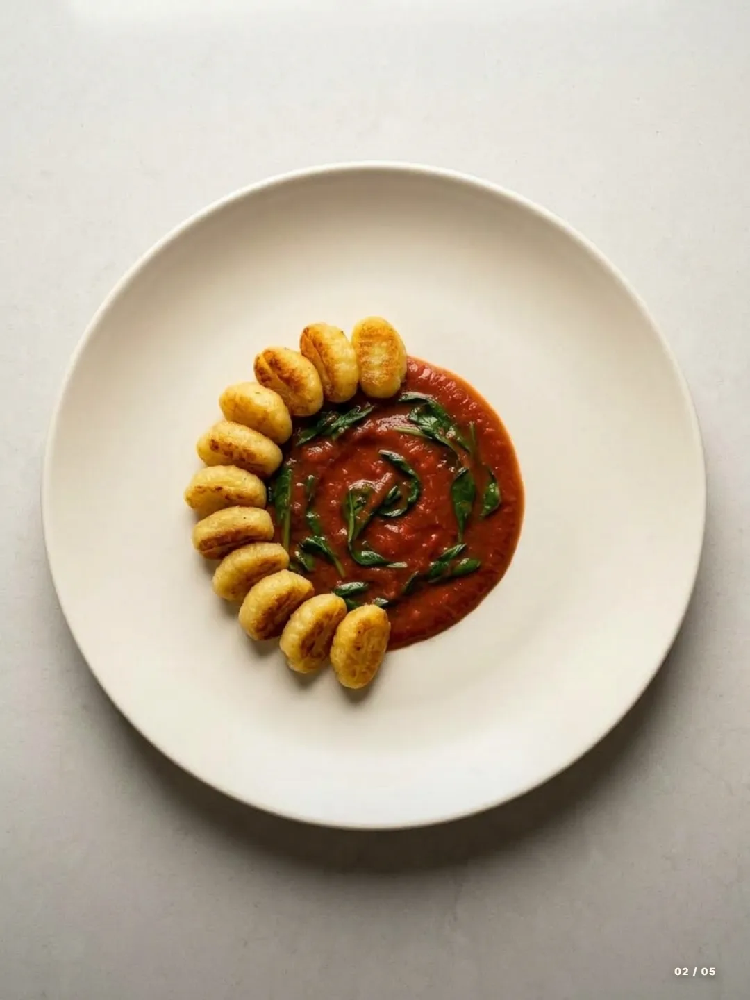
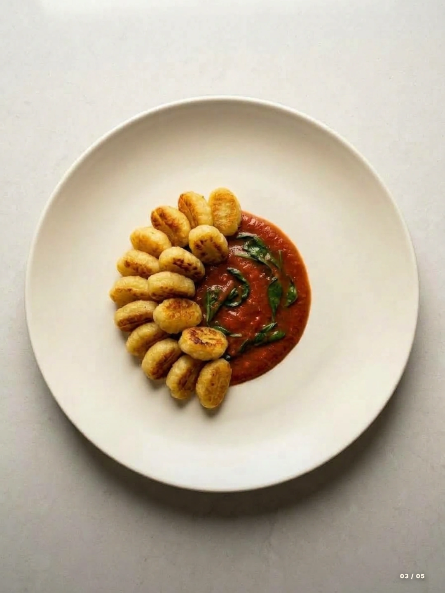
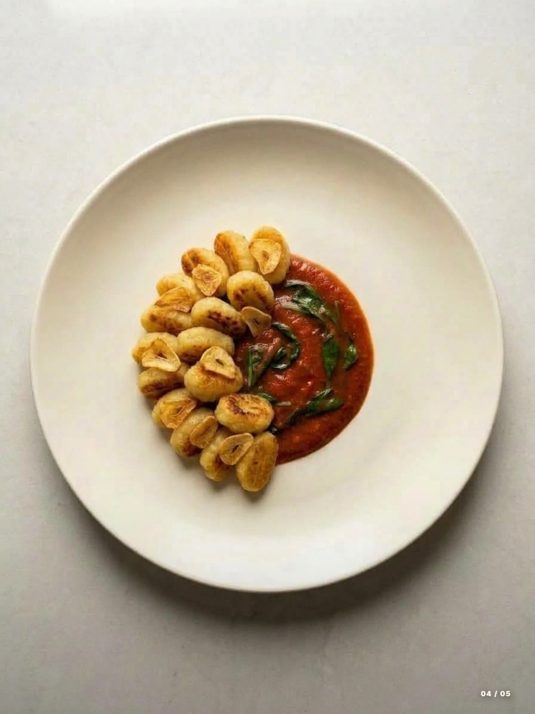

30 minutes · Cook & Plate It
Crispy Butter-Seared Gnocchi with Tomato-Spinach Sauce
Golden potato gnocchi, a rich tomato-spinach sauce, crisp garlic chips, and a light Parmesan finish. Cook the components, then bring them together with five simple plating steps.
Recipe by Nibble

- Prep
- 5 minutes
- Cook
- 20 minutes
- Plate
- 5 minutes
- Serves
- 2
Ingredients
- 16 ounces (450 g) potato gnocchi, fresh or shelf-stable
- 4 tablespoons (55 g) salted butter, divided
- 4 garlic cloves, thinly and evenly sliced
- 1 cup (240 ml) canned crushed tomatoes
- 2 packed cups (60 g) baby spinach
- ¼ cup (25 g) finely grated Parmesan
- 2 tablespoons olive oil
- Up to ½ teaspoon salt, to taste
- ¼ teaspoon black pepper
- ¼ cup (60 ml) water, plus more for boiling the gnocchi
Phase 01
Cook the gnocchi
-
Cook and dry the gnocchi
Bring a pot of water to a boil. Cook the gnocchi according to the packet, often 2–3 minutes or until they float and are tender. Drain well, then spread on a tray for a few minutes so surface moisture can evaporate. Use fresh or shelf-stable potato gnocchi; frozen gnocchi may need different timing.
-
Make the garlic chips
While the water heats, put the olive oil and sliced garlic in a small, cold frying pan. Set over medium-low heat and cook, stirring gently, until the slices are pale gold, about 2–4 minutes. Lift them onto a paper towel immediately; they keep darkening off the heat. Keep the garlic-infused oil in the pan.
-
Simmer the tomato-spinach sauce
Take the small pan briefly off the heat, then carefully add the crushed tomatoes and ¼ cup water to the garlic oil. Return to medium-low heat and simmer for 6–8 minutes, stirring, until thick enough to sit in a pool on a plate. Fold in the spinach and cook for 1–2 minutes until wilted. Stir in 1 tablespoon butter and the black pepper. Taste before adding salt, up to ½ teaspoon: the butter and Parmesan are already salty. Keep warm on low heat.
-
Butter-sear the gnocchi
While the sauce simmers, melt the remaining 3 tablespoons butter in a wide nonstick frying pan over medium heat. Add the drained, surface-dry gnocchi in one layer. Leave undisturbed for 3–4 minutes until the underside is golden, then turn and cook for another 3–4 minutes. Lower the heat if the butter begins to darken quickly. Work in batches if the pan is crowded, allowing extra time.
-
Get ready to plate
Check that the sauce is thick but spoonable; add a small splash of water if it is too stiff. Set out two plates, the warm sauce, crisp gnocchi, garlic chips, and grated Parmesan. Divide everything between the two servings and follow the plating guide below. Keep the gnocchi out of the sauce until serving to preserve their crisp edges.
Phase 02 · Five-photo guide
How to plate gnocchi
-

01 / 05Lay the sauce base
Spoon half the warm tomato-spinach sauce into a neat pool slightly off-center on each plate. Use the back of a spoon to round the edge, leaving a wide clean rim.
A shallow pool supports the gnocchi without covering their crisp tops.
-

02 / 05Curve the first layer
Arrange a close crescent of gnocchi along the left edge of each sauce pool. Turn the golden faces toward you and overlap the sauce just enough to anchor the pieces.
Leave the right side of the sauce visible.
-

03 / 05Build a little height
Nestle the remaining gnocchi inside the crescent and rest a few on top. Keep the pile low and stable, with the browned surfaces visible.
The photos show the arrangement; divide all the gnocchi between your two plates.
-

04 / 05Add the garlic chips
Scatter half the garlic chips over the gnocchi on each plate, placing a few where their curled edges will show.
Add them just before serving so they stay crisp.
-
05 / 05
Finish with Parmesan
Finely grate or sprinkle half the Parmesan over each portion, concentrating on the gnocchi. Wipe away stray sauce from the rim and serve immediately.
Keep the finish light enough to see the golden gnocchi and red sauce underneath.
{kind=link}
{kind=link}
{kind=link}
{kind=link}
{kind=link}
Keep the edges crisp
Dry before frying
Water left on boiled gnocchi creates steam in the pan. Drain thoroughly and give the surface a few minutes to dry before adding them to the butter.
Give each piece space
A single layer browns more evenly. Let the first side form a crust before turning, and use a second batch if your pan is too small.
Keep the sauce underneath
For this plated version, avoid tossing the gnocchi through the sauce. Spoon the sauce onto the plate first so the golden tops stay exposed.
Gnocchi questions
Do I have to boil gnocchi before pan-frying?
This method boils fresh or shelf-stable gnocchi first for a tender center, then sears them for a crisp surface. Some products are designed for frying straight from the packet; follow the manufacturer's instructions if yours is one of those.
Can I use tomato passata instead of crushed tomatoes?
Yes, use the same volume. Passata makes a smoother sauce, while crushed tomatoes can be more textured. Simmer until the sauce holds a shallow pool rather than spreading thinly across the plate.
Is this recipe vegetarian?
Traditional Parmesan is made with animal rennet. For a vegetarian version, choose a vegetarian hard cheese and check the gnocchi packaging. The recipe as written contains dairy, and most potato gnocchi also contain wheat.
Can I prepare any parts ahead?
Prepare the sliced garlic, measured ingredients, and grated cheese before cooking. For the crispest result, sear the gnocchi and add the garlic chips just before serving; holding the finished plate lets the sauce soften them.